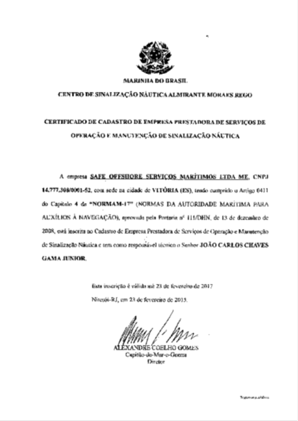
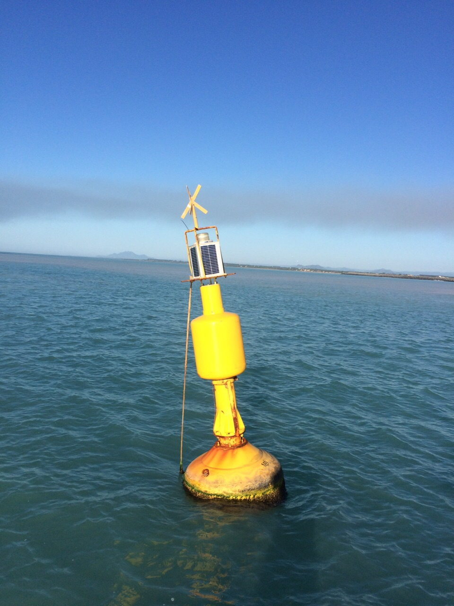
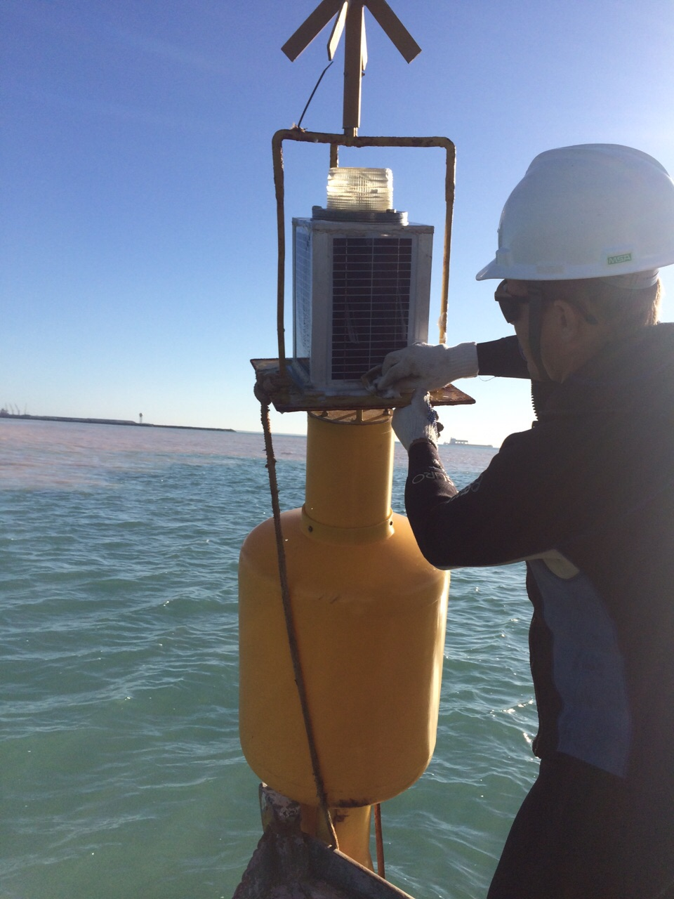
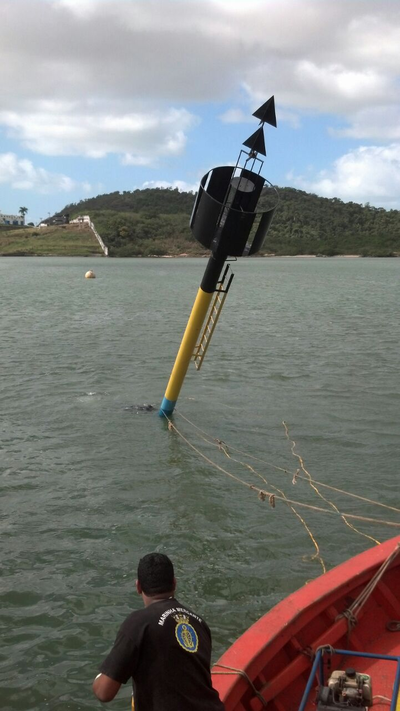
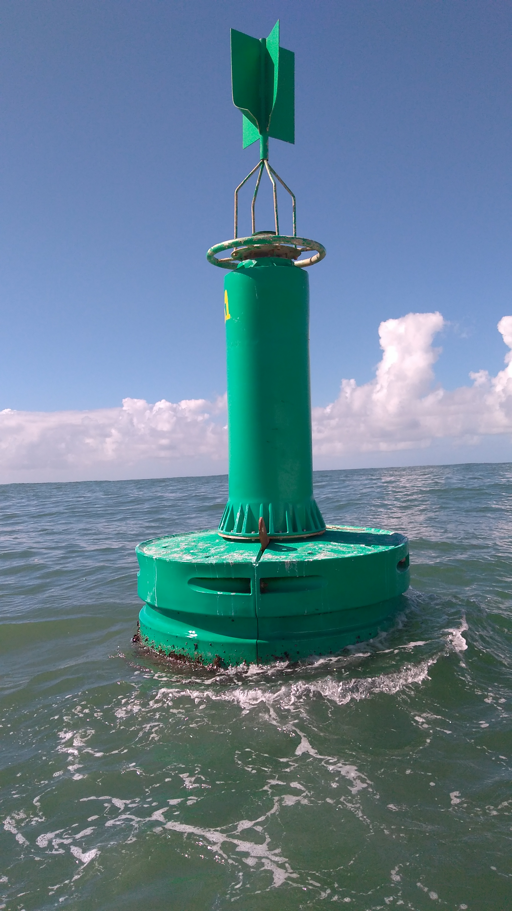
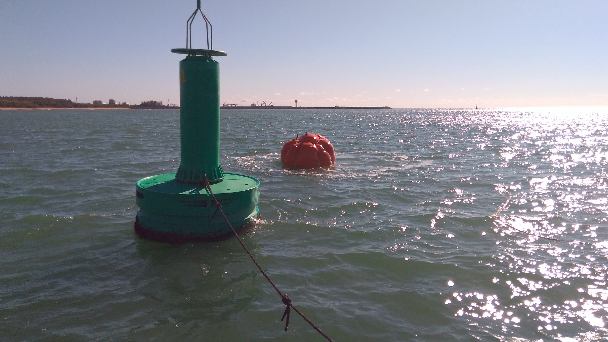
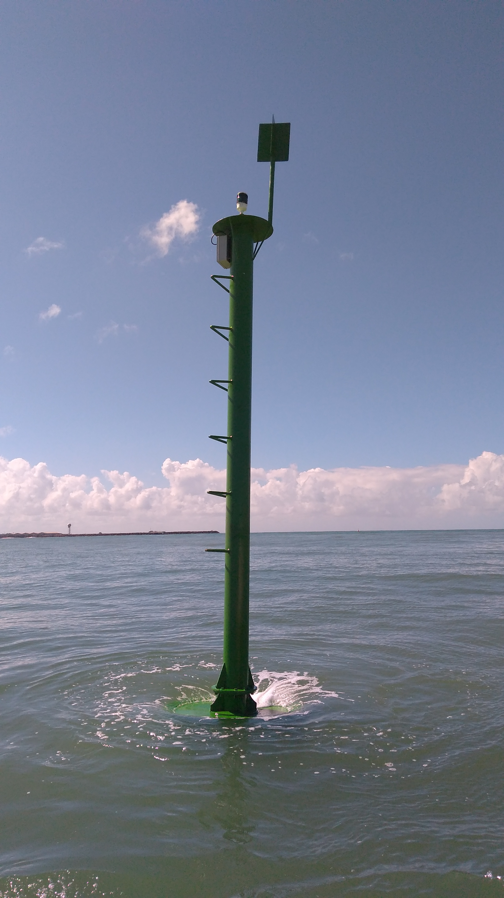

A Safe Offshore Serviços Marítimos está cadastrada no site do Centro de Sinalização Náutica Almirante Moraes Rego (CAMR) como empresa apta a trabalhar com Sinalização Náutica em todo território Nacional Brasileiro.
Empresa devidamente cadastrada e autorizada pelo CAMR para execução de serviços de sinalização náutica em todo o território nacional, garantindo conformidade com as normas da Marinha do Brasil.

Cadastro CAMR






Autorização oficial da Marinha do Brasil
Serviços em todo território brasileiro
Da elaboração à manutenção
Entre em contato e solicite um orçamento para seu projeto de balizamento.